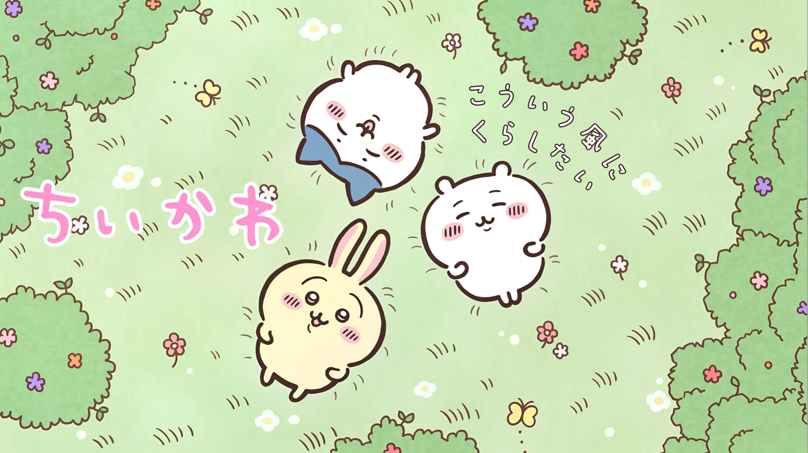
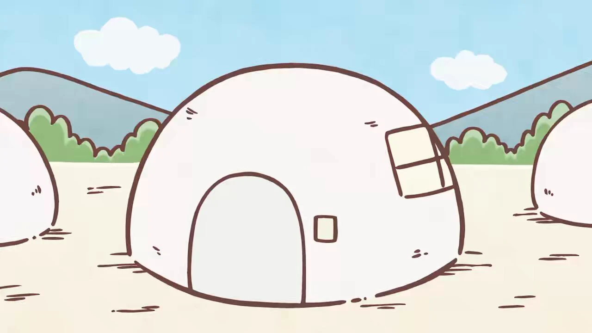

Did you know? "Chiikawa" is short for chiisakute kawaii — Japanese for "small and cute".
What is Chiikawa?
Chiikawa follows small, round creatures as they work odd jobs, take qualification exams, fight monsters, and buy delicious foods together. The series balances heartwarming friendships with funny, relatable everyday struggles.

Why Fans Love the Series
- Simple, round, and adorable character designs
- Relatable storylines about hard work, exams, and friendship
- Short, charming anime episodes that are easy to watch
- Collectable plushies and cute merchandise worldwide
How to Start Exploring
- Meet the main characters on our About page
- Watch short episodes on official YouTube channels
- Check character stats on our Contact page table
